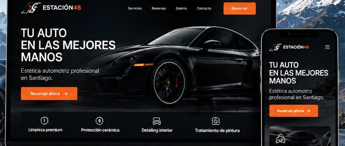

Resumen del proyecto
Una experiencia digital que refleje la calidad del servicio.
Estación48 ofrece lavado, detailing, pulido y mantenimiento automotriz. El proyecto contempla una landing y una agenda de reservas.
Objetivo: presentar claramente los servicios, facilitar el contacto y permitir que cada cliente seleccione servicios y bloques horarios disponibles.

Desafío
Explicar la oferta
Reunir servicios distintos en una experiencia comprensible y consistente.
Solución propuesta
Reservas por bloques
Cada servicio ocupa una duración configurable y la agenda valida disponibilidad consecutiva.
Estado
Diseño y desarrollo
Caso ilustrativo en curso. No se publican resultados de conversión ni cifras no verificadas.
Diseño del proyecto
Una interfaz clara y orientada a reservar.
Vista conceptual. Reemplazar por capturas reales y resultados cuando el proyecto esté implementado.
¿Necesitas algo parecido?
Podemos revisar una solución alineada con tu operación.